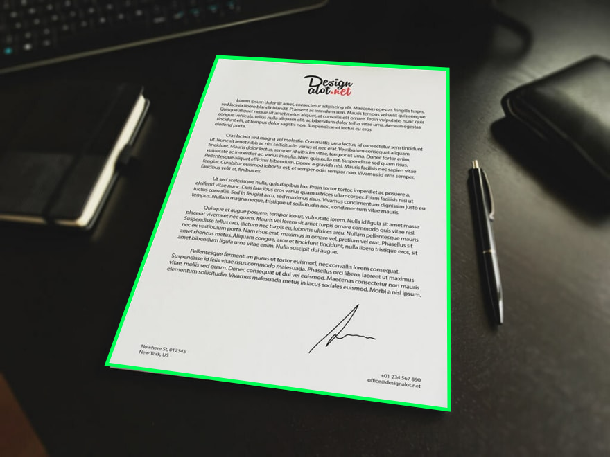
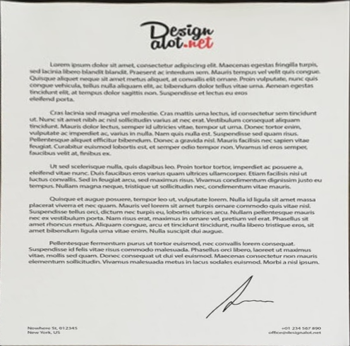
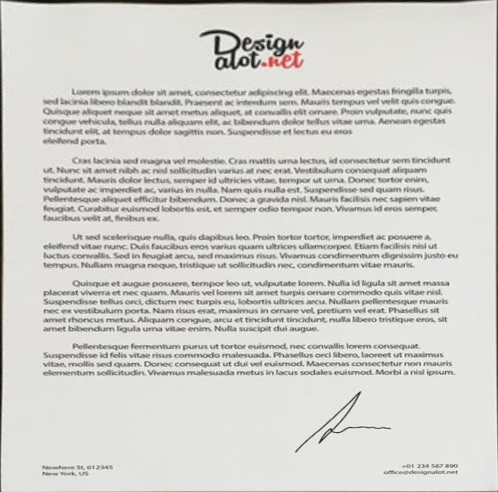
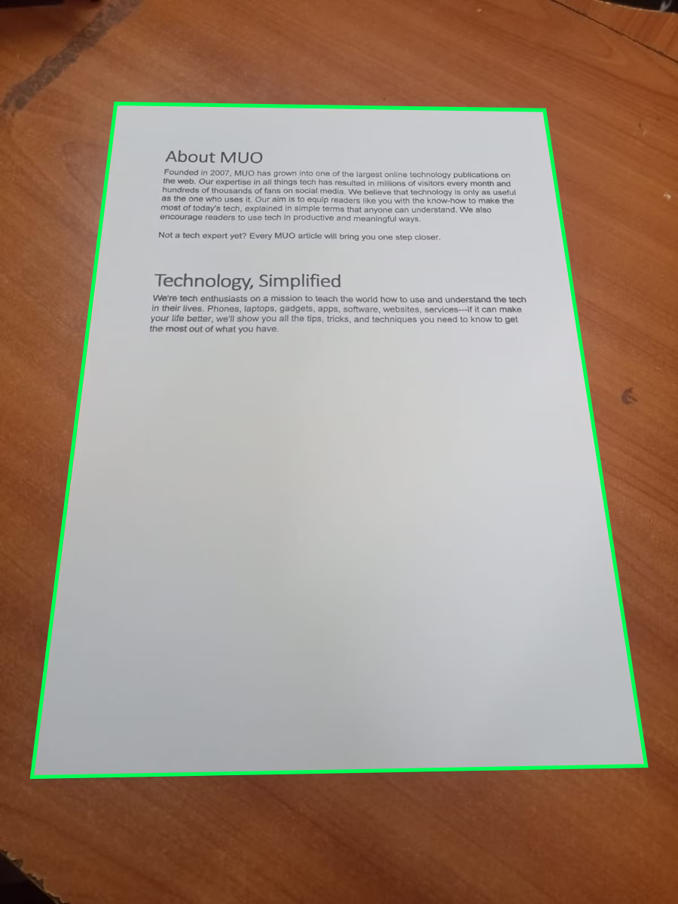
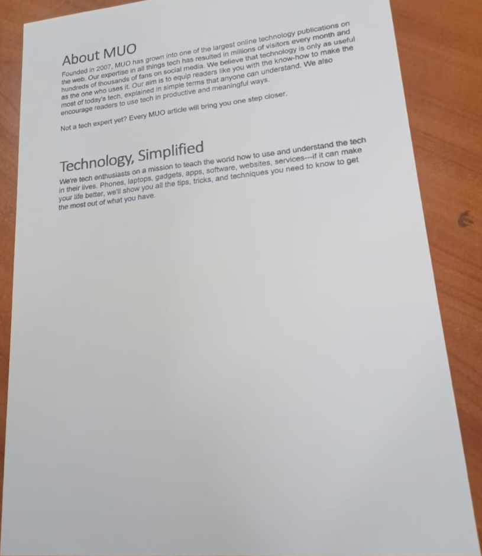
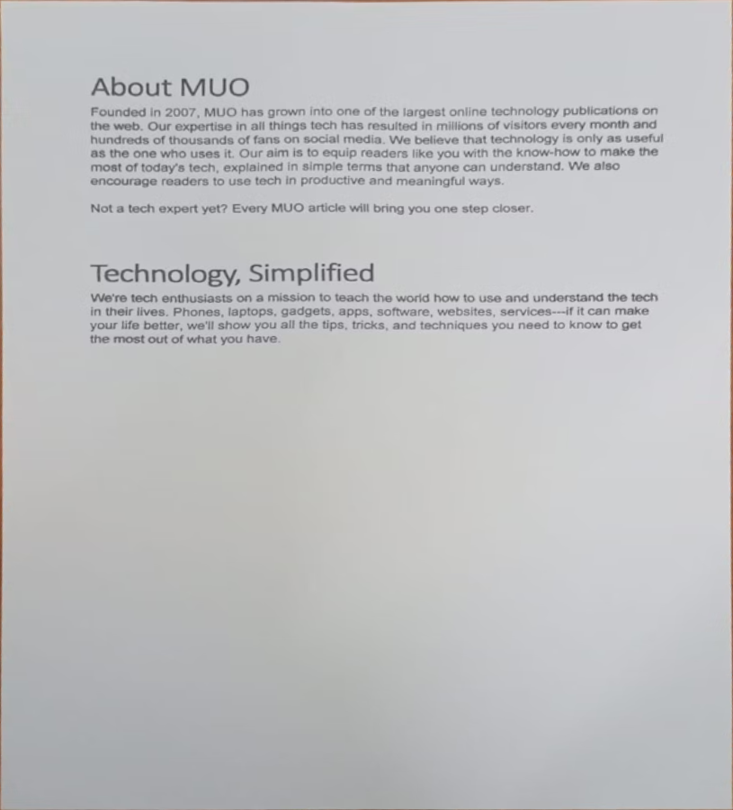
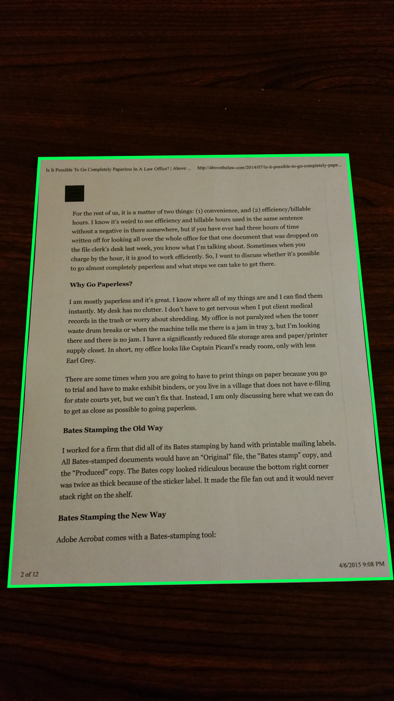
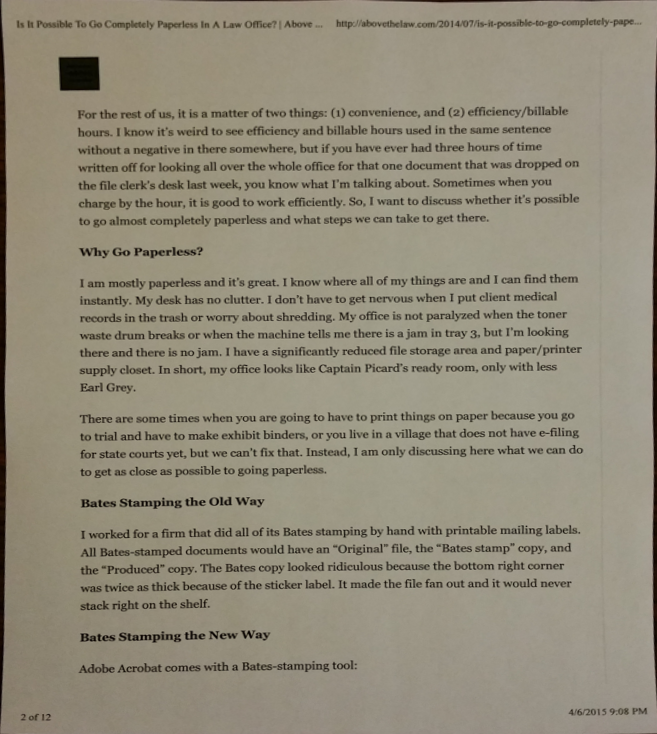
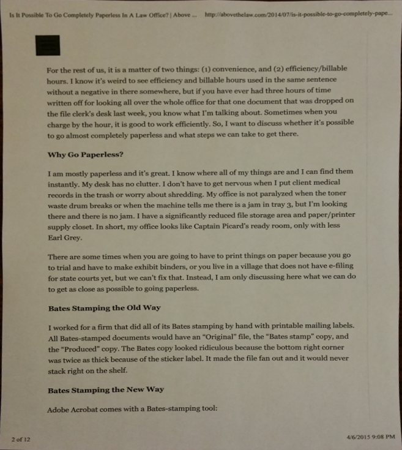

Fotografias reais processadas no Chromium. Verde indica os quatro cantos selecionados. Os filtros de realce ficaram desligados para comparar a geometria.
As duas estimativas são explicitamente sinalizadas no aplicativo. Correção de perspectiva não remove dobras nem garante a proporção física da folha.
test — Contorno detectado
Foto e cantos detectados

Versão original

Versão corrigida

test2 — Contorno detectado
Foto e cantos detectados

Versão original

Versão corrigida

test3 — Contorno detectado
Foto e cantos detectados

Versão original

Versão corrigida

test4 — Recorte estimado: revisar bordas
Foto e cantos detectadosVersão originalVersão corrigida